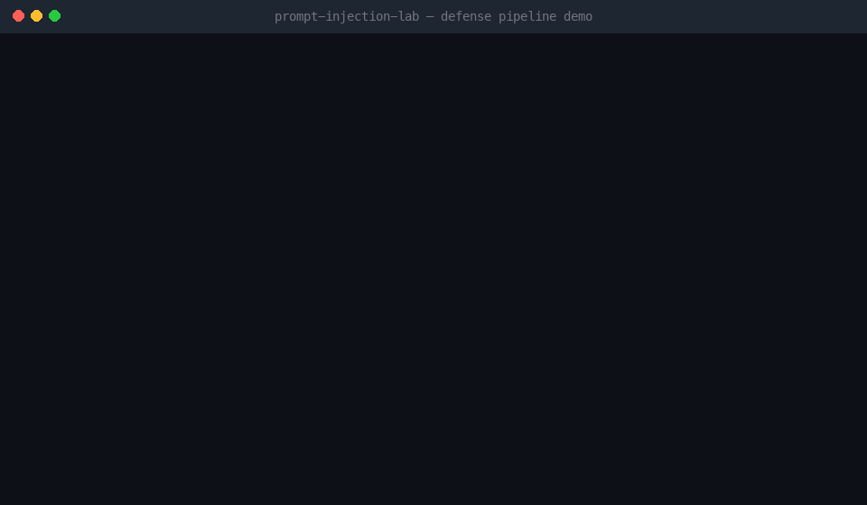
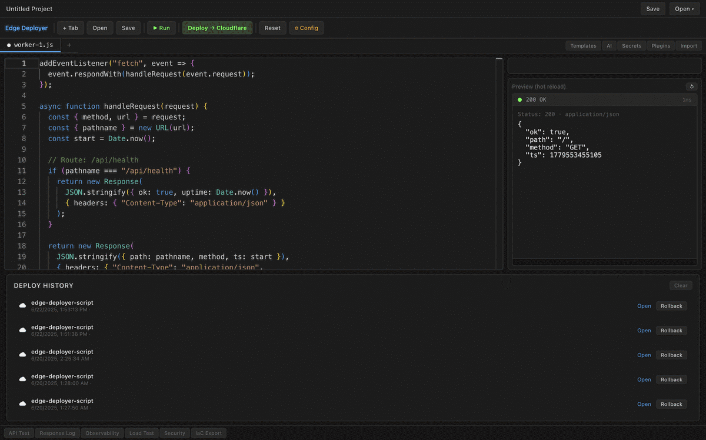
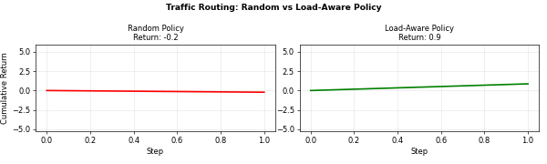
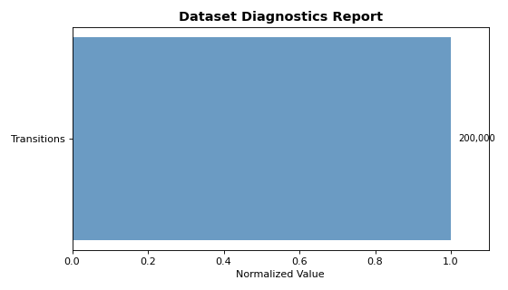

Projects — Mansoor Mamnoon
LLMFirewall
Real async stdio MCP security proxy enforcing taint-aware least privilege for tool-using LLM agents — installable via pip install llmfirewall.

Tool-using LLM agents are vulnerable to prompt injection through malicious tool outputs and retrieved documents. Regex denylists are enumerable. Detection alone fails on RAG attacks where plausible-sounding documents instruct the agent to call a write tool — the agent complies because no suspicious keywords are present.
Seven-layer enforcement pipeline in a real async stdio MCP proxy: allowlist → lookalike detection → arg injection scan → arg sanitization → secret-flow guard → taint-aware write gating → output injection scan. Cross-turn taint propagation via n-gram fingerprinting blocks relay attacks. Tested end-to-end against real MCP servers (filesystem, git, SQLite).
48% ASR vs 100% no-defense baseline. 0% ASR on tool-side-effect attacks with gate ablation — detection alone achieves 73% on those cases. 0.6% FPR. 0.16ms average latency with no external model call. 839 tests across unit + integration suites.
What I Built
A real async stdio MCP proxy with seven independent enforcement layers:
- Allowlist — any unauthorized tool blocked before upstream is called
- Lookalike detection — typosquatted tool names (
p0st_slack,post_s1ack) - Arg injection scan — injection payloads embedded in tool arguments
- Arg sanitization — external exfiltration URLs, oversized payloads, control chars
- Secret-flow guard — API keys and tokens in outgoing arguments
- Taint-aware write gating — RAG/tool-output content cannot authorize write-side-effect tools regardless of detection score
- Output injection scan — injected instructions in tool responses and resource reads
Cross-turn taint propagation: fingerprints every tool response via word 3-grams. Relay attacks — where a document retrieved on turn 1 is exfiltrated via a write tool on turn 3 — are blocked even when arguments contain zero injection keywords.
Secret scanner: named-regex patterns (OpenAI/Anthropic keys, GitHub tokens, AWS keys, JWTs, PEM certs, Stripe/npm/PyPI tokens, .env-style assignments) plus Shannon entropy as a backstop. Secrets redacted from tool outputs before the LLM context sees them.
Policy language: YAML DSL with five built-in profiles (permissive/developer/enterprise/strict/research_sandbox). Each tool declares its effect class, which taint sources may authorize it, and which inputs are forbidden. llmfirewall policy check validates; llmfirewall policy explain prints a human-readable breakdown.
Integration tests: 26 scenarios running the proxy in front of real MCP server subprocesses (filesystem, git, SQLite) — full round-trip from client to proxy to server and back.
Results
Key insight from the gate ablation: detection alone (regex + semantic) achieves 73% ASR on tool-side-effect attacks. Adding capability gating drops ASR to 0% on those cases — because user intent "summarize" never authorizes post_slack, regardless of what the retrieved document says.
Stack
Limit Order Book + Matching Engine
C++20 exchange-style matching engine for high-frequency trading (HFT) and quantitative systems — sustaining 20M+ messages/sec at sub-µs latency.
Exchange matching engines and high-frequency trading (HFT) systems require deterministic order matching at throughputs and latencies that commodity implementations cannot reach. Memory allocation, branch misprediction, and cache misses are the bottlenecks — not algorithm complexity.
Price-time priority matching engine with slab allocators, branch elimination, cache-hot pointer layouts, and CPU pinning. Full analytics: VWAP, TWAP, Iceberg, POV with reproducible PnL. Binance US market data connector and TAQ replay.
20.7M msgs/sec on a synthetic local benchmark (single-threaded, compiler-optimized). p50 = 0.04 µs, p99 ≈ 1 µs. Hardware spec and benchmark harness in the GitHub README. Crash recovery via snapshot/resume — mid-file restart produces identical fills.
What I Built
- Matching Engine: Price-time priority with FIFO fairness. Limit, market, IOC, FOK, POST_ONLY, and STP order types with deterministic fill semantics.
- Performance Engineering: Slab allocators eliminate heap fragmentation, branch elimination reduces misprediction cost, cache-hot pointer layouts maximize L1 hit rate, CPU pinning eliminates NUMA penalties.
- Market Data: WebSocket + REST connector for Binance US feeds, normalization to Parquet. Replay engine regenerates TAQ-style quotes and trades at 1×–100× speed.
- Analytics: Spread, imbalance, depth, volatility, impact curves. VWAP, TWAP, POV, and Iceberg execution strategies with reproducible PnL.
- Crash Recovery: Snapshot/resume proof — mid-file restart produces identical fills and PnL as single-pass replay.
- Tooling: Streamlit dashboard for real-time replay, Docker + GitHub Actions CI, one-command HTML report generator.
Results
Synthetic local benchmark — single-threaded, compiler-optimized build. Hardware spec and benchmark harness in the GitHub README.
Stack
Edge Deployer — Serverless IDE
Native desktop IDE for writing, previewing, deploying, and observing serverless functions across 6 cloud providers from a single window.

Serverless edge development is fragmented: deploy from the terminal, watch logs in a browser dashboard, test in Postman, manage secrets in a separate CLI, generate infra in Terraform. Every context switch breaks flow.
Electron app with Monaco editor, live edge runtime simulator (no cloud account needed to preview), 6-provider deploy engine behind a shared IDeployer interface, AI assistant (Claude API), P50/P95/P99 load tester, observability panel, AES-256-GCM secrets vault, IaC export (Pulumi/Terraform/Wrangler/Docker+K8s), and a sandboxed plugin system.
All 3 phases complete (Core → Ecosystem → Trust). 6 providers deployed from one window. 85 tests across 6 suites. Pre-built binaries for macOS, Windows, and Linux on every tagged release.
What I Built
- Multi-cloud deploy engine: Cloudflare Workers, AWS Lambda, Vercel, Netlify, Fly.io, and Railway each implement a shared 7-method
IDeployerinterface — deploy, rollback, import, drift-detect, log-tail. Adding a new provider is under 300 lines. - Live edge runtime simulator: preview iframe runs a full Cloudflare Workers simulation —
fetchevents, in-memory KV, console capture, hot-reload (400ms debounce), 5s timeout guard. - AI assistant: Claude API with editor code injected as context — explain, debug, add CORS/auth, optimize cold starts, generate rate limiters. Key stored in the encrypted vault, never sent except on explicit Send.
- Observability: structured log stream per deploy/rollback/test event, stat cards, P50/P95/P99 percentiles, SVG sparkline.
- Load tester: configurable RPS (10/50/100+ or custom), live progress, final P50/P95/P99 report, cold-start outlier detection.
- Security scanner: 10 rules (4 critical) running on every keystroke — zero latency pure-regex. Critical issues block deployment.
- Encrypted secrets vault: AES-256-GCM with PBKDF2 (100,000 iterations), machine-keyed. Credentials excluded at the TypeScript type level — impossible to accidentally commit.
- IaC export: Pulumi, Terraform, Wrangler, Docker+K8s — all configs include IAM roles, resource bindings, health probes.
- Plugin system:
vm.Contextsandbox with explicit permission manifests. Hooks:onBeforeDeploy,onAfterDeploy,onCodeTransform. 5s execution timeout. - Cloud import + drift detection: pulls deployed code back into the editor; shows color-coded unified diff vs. local.
- 13 worker templates, 7 marketplace plugins, WebSocket tester, telemetry opt-in (3 levels).
Results
Stack
Offline RL Agent
Framework for training, evaluating, and stress-testing offline RL policies from static logs under safety constraints — with tools to answer whether a policy is actually safe to deploy.


Standard offline RL papers optimize for expected return on benchmark datasets and ignore deployment safety. They don't answer: Is this policy safe? Where will it fail? What does the training data actually cover? Datasets collected from suboptimal operators contain the coverage gaps that cause offline RL policies to fail in production.
6-algorithm framework (BC, CQL, IQL, TD3+BC, Decision Transformer, AWAC) with a 32-dimensional traffic routing simulator (SLO constraints, incidents, diurnal patterns), hospital treatment simulator, dataset diagnostics module, three OPE estimators (FQE/WIS/DR) with bootstrap CIs, policy shield, constraint critic, and causal failure explorer.
CQL achieves ~72 return vs. ~51 behavioral baseline with 3% SLO violations (vs. 8% behavioral). Bootstrap CI narrows FQE estimate to [65.1, 74.5]. Reproduce: make reproduce-small.
What I Built
- 6 algorithms: Behavior Cloning, CQL, IQL, TD3+BC, Decision Transformer, AWAC — all with consistent interfaces, safety constraints, and OPE support.
- Traffic routing simulator: 32-dim state space with SLO constraints, backend failures, incidents, and diurnal patterns. Mirrors real infrastructure management where offline exploration is dangerous.
- Hospital treatment simulator: safety-constrained environment with forbidden actions and patient state dynamics.
- Dataset diagnostics: coverage score, behavior entropy, OOD risk estimation, outlier detection, reward skew — outputs actionable warnings before training.
- Offline policy evaluation: FQE, Weighted Importance Sampling, Doubly Robust estimators with bootstrap CIs — estimate true return without online interaction.
- Safety layer: CVaR-5%, SLO violation rate, OOD action rate, catastrophic failure rate. Policy shield with three intervention strategies. Constraint critic (multi-constraint Q-function) for safety-aware action filtering.
- Failure explorer: causal analysis of policy failures with counterfactual explanations and dashboard integration.
- Streamlit dashboard + HTML reports: interactive dataset diagnostics, training run comparison, policy comparison. Self-contained single-file HTML reports with embedded plots.
- CLI:
orl train,orl diagnose,orl evaluate,orl report,orl dashboard.